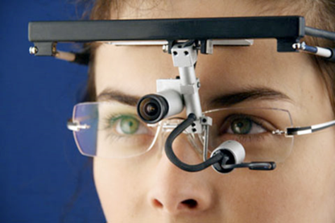

Eye Tracking (ET)
Conceito
- ET "agarrado"aos olhos, em que o utilizador tem de ter uma lente ou outro aparelho que fisicamente regista os movimentos oculares. Este método, embora barato e fácil de aplicar, é o com menor precisão dos apresentados;
- ET através de uma lente, em que o utilizador tem de ter um aparelho, que para além de caro, é pesado, o que dificulta usos de ET por sessões prolongadas. Este método é o com mais precisão dos apresentados;
- ET através de medições de potenciais elétricos, que seriam colocados ao redor dos olhos e detetam a localização da íris e funcionariam mesmo com os olhos fechados ou sem luz. A desvantagem deste método é que é comum haver interferências que dão falsos positivos do movimento ocular;
- ET através de uma câmara em frente ao utilizador, este é o método mais comum e consiste apenas numa câmara que se encontra por cima do que se pretenda que o utilizador observe, e através de filmagens em tempo real dos olhos do utilizador consegue determinar para onde está a olhar, é muito pouco invasivo e distrativo, mas depende fortemente da qualidade da câmara utilizada.
Aplicações do Eye Tracking
- Interfaces de Interatividade Humano-Computador: Esta tecnologia é muito usada em conjunto com computadores para criar interfaces de interação humano-computador. A sua capacidade de rastrear o olhar permite que as interfaces adaptam-se ás ações visuais do usuário, proporcionando uma interação mais intuitiva e eficiente.
- Psicologia e Compreensão Comportamental: Pode ser usado na psicologia, com finais de compreensão dos comportamentos humanos, que representa os pontos para onde o típico humano olha quando está a ler algo, exemplificando como essa tecnologia contribui para a análise detalhada de padrões de leitura e comportamento visual.
- Marketing: No campo de marketing, o ET serve para observar como é que as diferentes audiências-alvo reagem e observam os anúncios que aparecem nos social media, ajudando assim a criar estratégias de publicidade e design de conteúdo.
- Saúde: Com o estudo do comportamento visual, consegue-se obter informações muito importantes acerca do desenvolvimento, padrões de aprendizagem e sinais de doença, como por exemplo o Alzheimer, autismo, depressão, entre muitas outras.
- Trabalho: O ET também pode ser utilizado por empresas para entenderem os processos dos seus trabalhadores, e assim poderem identificar possíveis riscos de segurança, poupando assim muito tempo e melhorando a produtividade.
- Adaptações de Software para Pessoas com Deficiências Motoras: Para além de ser usada para estudos, pode também ser feitas adapta ções de software para pessoas com deficiências motoras para que consigam usar os olhos como um rato num computador, por exemplo.
O ET, constitui uma tecnologia avançada dedicada à observação e registo minucioso dos movimentos oculares de um individuo. O seu principal objetivo é captar a direção do olhar, analisar os padrões de movimento ocular e na compreensão de como os olhos reagem aos estímulos visuais. Por meio de sensores especializados, o ET possibilita a coleta de dados precisos sobre a posição e movimentos dos olhos. Existem 4 maneiras principais de ser feito o ET, sendo estas:
